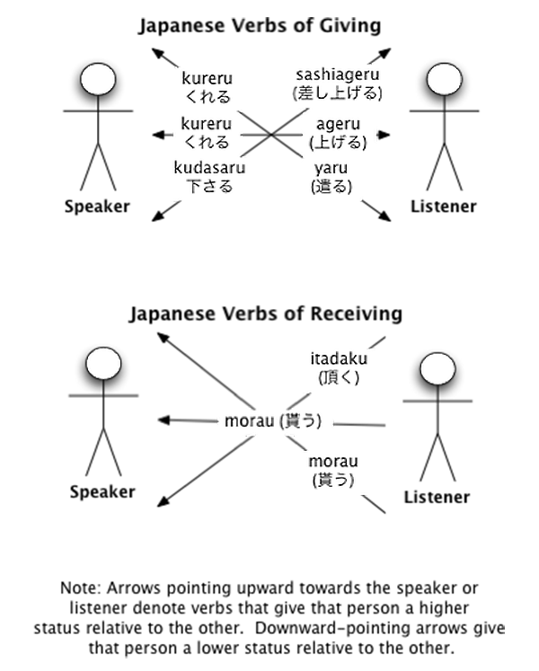

Your browser doesn't support the features required by impress.js, so you are presented with a simplified version of this presentation.
For the best experience please use the latest Chrome or Safari browser. Firefox 10 (to be released soon) will also handle it.
Japanese
verbs of giving
and receiving

Kureru
Kudasaru
Sashiageru
Ageru
Yaru
Itadaku
Morau
Page Wikibooks
Use arrow keys to navigate.
Click on the white rectangles to jump to the corresponding part.
Politeness
- 3 levels of speech
- honorific or humble
- normal or casual
- vulgar or manly
- 2 levels of politeness (but only 4 of the 6 possible levels are really used)
Keigo
- highest level of speech
- honorific : you raise you interlocutor above yourself
- or humble : you lower yourself in relation with you interlocutor
Neutral or casual
- with 2 levels of politeness
- the most commonly used
- when in doubt, use neutral polite speech
Vulgar Speech
- for boys and men only
- a lot in manga (especially shounen manga) since manga's speech tends to be very casual.
さしあげる
Sashiageru
you give something to someone superior
Honorific speech (Keigo)
This verb elevate the person that is given to in a higher position than the one that is giving.
Variations of さしあげる
- Since it is Keigo, you should always use it in the polite form さしあげます (sashiagemasu).
- If you use it with someone else than you for subject, be aware that it implies a strong social hierarchy.
- Usually in these cases, you should rather use あげる (ageru), especially in the polite form.
あげる
Ageru
you give something to someone else
Normal speech
Use it when you don't need to be especially formal (most of the time).
Variations of あげる
- If you want to show some politeness (with colleagues for instance), use it in the polite form あげます (agemasu).
- With your close friends or family, use it in plain casual form あげる (ageru).
Do not use やる (yaru).
やる
Yaru
you give something to someone inferior
Vulgar speech
Use it when you give something to an animal or if you want to stress out you superiority.
Beware, it could be seen as insulting for the other person.
Variations of やる
- Women should never use やる (yaru) since it is vulgar.
- Men should only use it as a joke, insult or with animals.
- Since it is vulgar speech, you don't need to use the polite form. Use only the plain form やる (yaru).
Special case
Given to you
- There is a distinct set of verbs when you are the one being given to.
- They can also be used when given to someone very close to you, considered in your inner circle, like your wife or husband.
くれる
Kureru
Someone give something to you
Normal speech
It can only be used when something is given to you or someone very close to you (your wife or husband).
Use it when someone gives something to you and you want to put the emphasis on him rather than you.
Variations of くれる
- You can also use it in conjunction with other verbs, in that case it add a meaning of "giving a favour"
- Japanese people use it a lot to ask for a variety of things.
くださる
Kudasaru
Someone superior give something to you
Humble speech (Keigo)
Use it when you want to describe yourself as inferior when someone give something to you.
Use it to humbly ask for something.
Variations of くださる
- The japanese word for "please" is ください (kudasai), which literally means "I wish (you) to humbly give me".
To receive
- Verbs of receiving are much easier
- There are only two forms, one humble and one neutral.
いただく
Itadaku
you recieve something from someone superior
Humble speech (Keigo)
Use it when you receive something from a superior or you want to express deep gratitude.
Variations of いただく
- The japanese word for "bon appetit" is いただきます (itadakimasu), which literally means "I receive humbly".
This way, buddhists express gratitude over the plants and animals that gave their lives in order to make the meal.
- Like くれる (kureru), it is often used to ask for permission to do something, with meaning of "being alowed to"
もらう
Morau
you receive something from someone
Normal speech
Use it when you receive something from someone as an equal (most of the time).
Variations of もらう
- If you want to show some politeness or respect (with colleagues for instance), use it in the polite form もらいます (moraimasu).
- With your close friends or family, use it in plain casual form もらる (morau).